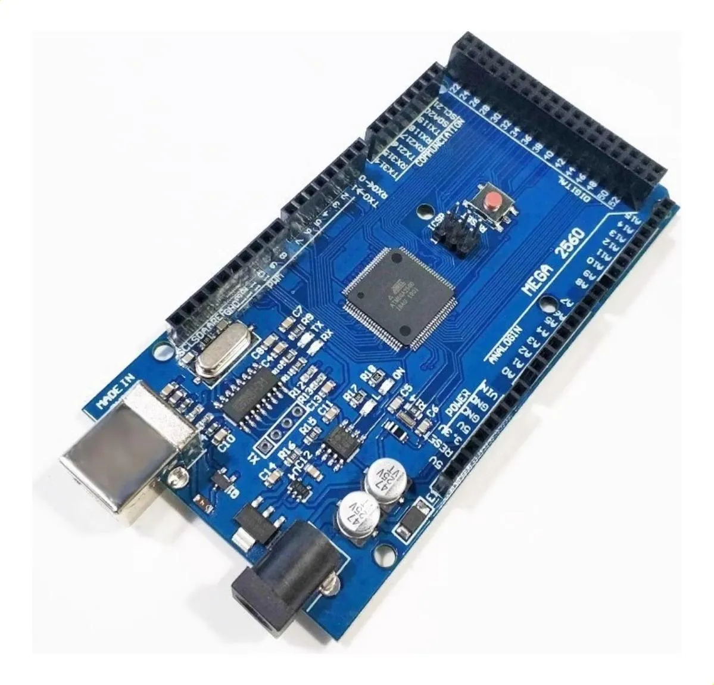
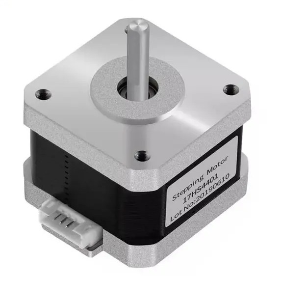
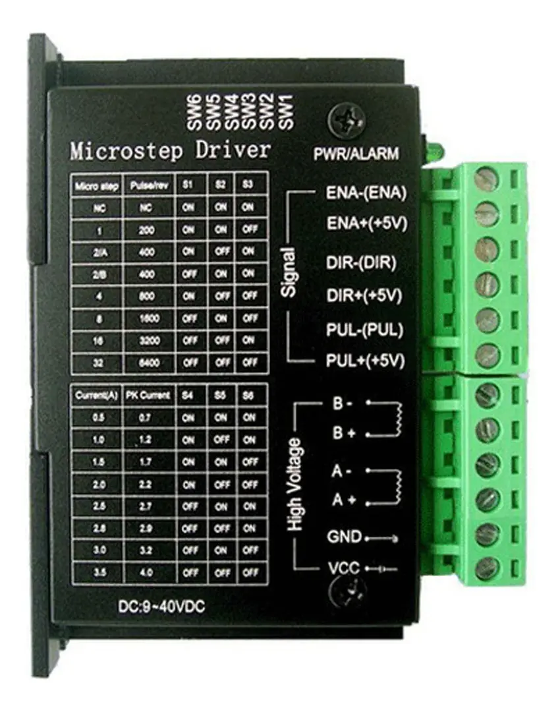
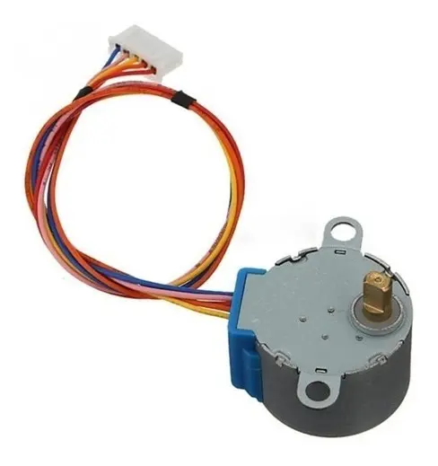
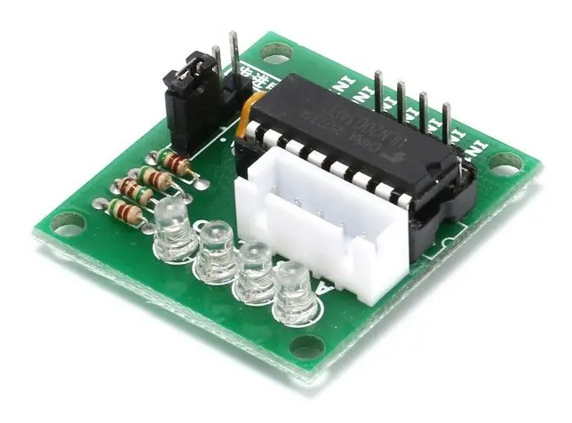
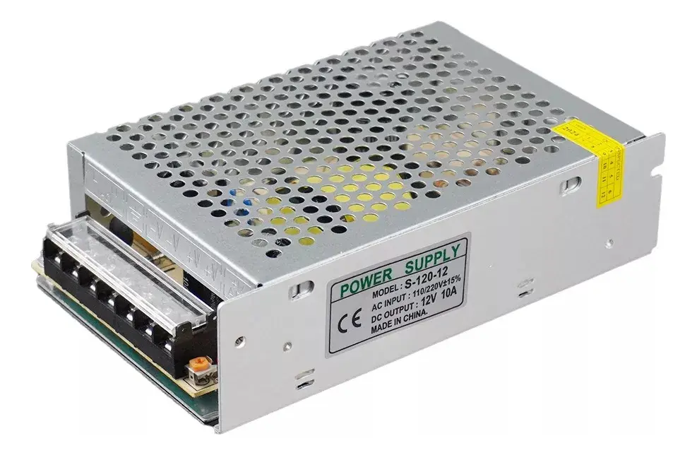

Brazo Robótico Esférico
Proyecto Integrador de Mecatrónica

Proyecto Integrador de Mecatrónica
Este proyecto aborda la concepción, modelado matemático y fabricación de un brazo robótico de articulación esférica (R-R-P), diseñado para ejecutar tareas de posicionamiento tridimensional con alta precisión.
Mediante la combinación de cinemática inversa calculada en tiempo real, actuadores paso a paso de alto torque y un algoritmo preventivo de protección anti-colisión, la plataforma transforma coordenadas cartesianas arbitrarias (X, Y, Z) en movimientos articulados fluidos y coordinados, respaldados por una interfaz física de control e indicadores visuales de estado.
El sistema de potencia y control utiliza componentes mecatrónicos seleccionados para asegurar la resolución de pasos, la estabilidad térmica del sistema y la confiabilidad operativa.

Unidad central de procesamiento encargada del cálculo cinemático, la generación de señales de tiempo y la gestión de periféricos de entrada y salida.

Actuadores bipolares responsables de la rotación azimutal (θ1) y la elevación polar (θ2), aportando la fuerza necesaria para vencer la inercia de la estructura.

Etapas de potencia con regulación de corriente constante y aislamiento óptico, optimizadas para un manejo eficiente de micropasos.

Actuador de precisión para la transmisión lineal de la cremallera (e), responsable del desplazamiento prismático del efector final.

Controlador con arreglo de transistores Darlington enfocado en la conmutación de fases para el motor unipolar de la cremallera.

Suministro de energía regulada de alto rendimiento que previene caídas de voltaje ante demandas pico de torque simultáneas.
Interrupción y ejecución manual: un pulsador inicia la trayectoria cinemática programada y el segundo alterna la liberación electromagnética de las bobinas de los motores.
Interfaz óptica de diagnóstico operacional instantáneo:
Parámetros clave del desempeño estructural, eléctrico y de procesamiento del manipulador:
Configuración Esférica 3 DOF (Rotacional - Rotacional - Prismática)
Cálculo trigonométrico e interpolación lineal a 16 MHz en Arduino Mega
Alimentación principal a 12V DC con capacidad de entrega de 10 Amperios
Protección automática en elevación θ2 y carrera máxima de extensión lineal e
Control por pulsos y dirección (PUL/DIR) con aceleración progresiva implementada
Monitoreo mediante puerto serie, pulsadores físicos e indicadores LED de 3 estados
El flujo de trabajo inicia cuando el microcontrolador evalúa las coordenadas de destino (X, Y, Z). A través de las funciones trigonométricas en C++, determina los ángulos exactos θ1, θ2 y la extensión requerida e.
Antes de activar los motores, el algoritmo valida que las coordenadas no violen los límites de colisión físicos. Si la trayectoria es segura, el LED verde se enciende y los motores ejecutan la secuencia de movimiento paso a paso.
* Video de demostración temporal del entorno de pruebas. Próximamente se actualizará con la prueba del mecanismo final.
El brazo robótico fue diseñado mediante modelado CAD 3D (SolidWorks). Esta sección incluirá los esquemas de transmisión, soportes estructurales, planos de ensamble y dimensiones del mecanismo esférico.
El firmware en C++ calcula la cinemática inversa a partir de las coordenadas cartesianas de entrada (X, Y, Z) para determinar los ángulos articulados (th1, th2) y la extensión de la cremallera (e). Incluye algoritmos de protección anti-colisión en tiempo real, habilitador manual y aceleración gradual para los motores paso a paso.
float x = -130;
float y = 150;
float z = -80;
float th1 = 0;
float th1n = 0;
float th2 = 0;
float th2n = 0;
float h = 0;
float e = 0;
float a = 0;
const int enaPin = 34;
const int dirPin = 36;
const int pulPin = 38;
const int enaPin2 = 35;
const int dirPin2 = 37;
const int pulPin2 = 39;
int ppv = 2048;
float con = 0;
float cona = 0;
int pasos = 0;
int pinan = 0;
int paro = 19;
int pausa = 20;
int giro = 21;
int ini = 8;
int inia;
int inic;
int fre = 9;
int fren;
int frea;
int cuen;
void setup() {
Serial.begin(9600);
pinMode(enaPin, OUTPUT);
pinMode(dirPin, OUTPUT);
pinMode(pulPin, OUTPUT);
pinMode(enaPin2, OUTPUT);
pinMode(dirPin2, OUTPUT);
pinMode(pulPin2, OUTPUT);
pinMode(2, OUTPUT);
pinMode(3, OUTPUT);
pinMode(4, OUTPUT);
pinMode(5, OUTPUT);
pinMode(paro, OUTPUT);
pinMode(giro, OUTPUT);
pinMode(inic, INPUT);
pinMode(fre, INPUT);
digitalWrite(enaPin, HIGH);
digitalWrite(enaPin2, HIGH);
digitalWrite(paro, LOW);
a = y - 81.5;
th1 = atan2(x,(z*-1))* (180 / PI);
h = sqrt(x*x + z*z);
th2 = atan2(a,h) * (180 / PI);
e = ((sqrt(a*a + h*h)) - 50); // Va a ser e-78mm porque es lo menos que puede estar la cremallera,
con = (e - 78) / 10; // e incluso menos con la restriccion del espacio
}
void loop() {
inic = digitalRead(ini);
Serial.println(e);
Serial.println(con);
fren = digitalRead(fre);
// Habilitador manual
if (fren == HIGH && frea == LOW){
cuen = !cuen; // Cambia entre 0 y 1
digitalWrite(enaPin, cuen);
digitalWrite(enaPin2, cuen);
}
if (th2 > 45 && e < 113){
Serial.println("Motor bloqueado por riesgo de colision");
digitalWrite(paro, HIGH);
}
else if (th2 < (-21.6) || e < 55){
Serial.println("Motor bloqueado por riesgo de colision");
digitalWrite(paro, HIGH);
}
else {
Serial.println("Todo good");
// Secuencia de giro
if (inic == HIGH && inia == LOW){
Serial.println("Ya empezo");
if(con < 0){
cona = con * (-1);
pasos = (ppv * cona) / 12.6;
horario();
}
if(con > 0){
pasos = (ppv * con) / 12.6;
antihorario();
}
delay(500);
if (th1 < 0){
run();
digitalWrite(dirPin, LOW);
th1n = th1 * (-1);
gira1(th1n);
}
if (th1 > 0){
run();
digitalWrite(dirPin, HIGH);
gira1(th1);
}
delay(500);
if (th2 < 0) {
run();
digitalWrite(dirPin2, LOW);
th2n = th2 * (-1);
gira2(th2n);
}
if (th2 > 0) {
run();
digitalWrite(dirPin2, HIGH);
gira2(th2);
}
delay(500);
}
}
stop();
delay(50);
inia = inic;
frea = fren;
}
void run(){
digitalWrite(pausa, LOW);
digitalWrite(giro, HIGH);
}
void stop(){
digitalWrite(giro, LOW);
digitalWrite(pausa, HIGH);
}
void gira1(long pul1) {
long totalPasos1 = (pul1 / 360.0) * 1600.0;
for (long paso1 = 0; paso1 < totalPasos1; paso1++) {
int velocidad1 = 800;
if (paso1 < 10) {
velocidad1 = map(paso1, 0, 10, 3000, 800);
}
digitalWrite(pulPin, HIGH);
delayMicroseconds(velocidad1);
digitalWrite(pulPin, LOW);
delayMicroseconds(velocidad1);
}
}
void gira2(long pul2) {
long totalPasos2 = (pul2 / 360.0) * 1600.0;
for (long paso2 = 0; paso2 < totalPasos2; paso2++) {
int velocidad2 = 800;
if (paso2 < 10) {
velocidad2 = map(paso2, 0, 10, 3000, 800);
}
digitalWrite(pulPin2, HIGH);
delayMicroseconds(velocidad2);
digitalWrite(pulPin2, LOW);
delayMicroseconds(velocidad2);
}
}
void horario (){
for (int i = 0; i < pasos; i++){
int pin = i % 4 + 2;
digitalWrite(pin, HIGH);
digitalWrite(pinan, LOW);
delayMicroseconds(800);
Serial.println(pin);
pinan = pin;
}
}
void antihorario (){
for (int i = 0; i < pasos; i++){
int pin = (i % 4 - 5) * (-1);
digitalWrite(pin, HIGH);
digitalWrite(pinan, LOW);
delayMicroseconds(800);
Serial.println(pin);
pinan = pin;
}
}